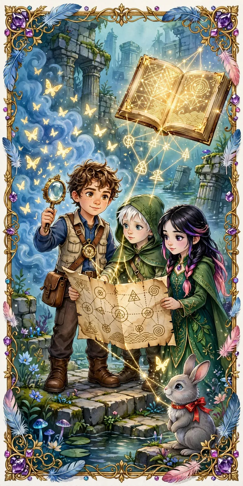
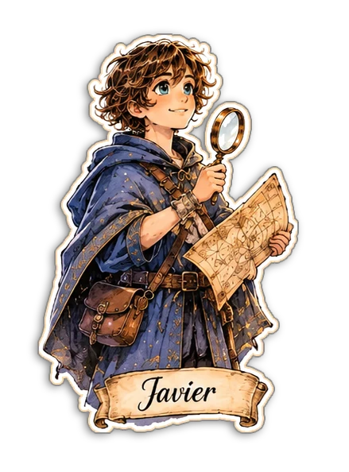
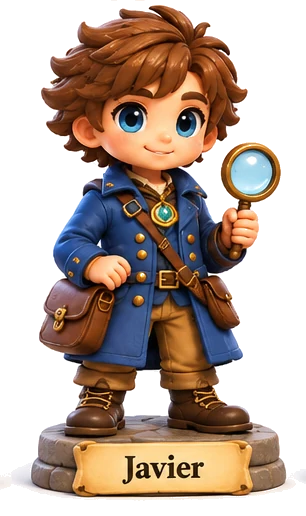
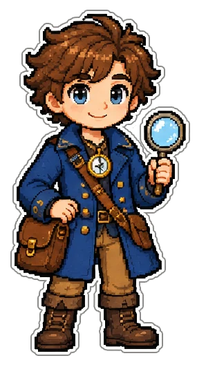

Ficha 08 • Personajes
PersonajeJavier
El Joven Explorador · El Explorador de Patrones
Curioso y analítico, atraído por desvelar significados ocultos.
“Cada patrón oculto es una pista que une el pasado con el presente.”

De un vistazo
- InstrumentoLupa dorada
- GuíaBrújula
- RegistroMapa de símbolos
- CompañeroConejo compañero
I
Características Físicas
Su pasión por descubrir patrones refleja una curiosidad visual constante y aguda. Joven explorador de mirada atenta, con chaleco de explorador, lupa dorada y brújula, siempre observando mapas, ruinas y símbolos en busca de conexiones ocultas.
II
Características Psicológicas
Apasionado por la exploración y el descubrimiento, tiene un interés particular en los patrones y símbolos. Aunque inicialmente temeroso del cambio, gana confianza al enfrentar sus miedos y compartir lo que siente. Curioso y analítico, se siente atraído por desvelar significados ocultos. Aunque suele ser temeroso ante lo desconocido, se fortalece al enfrentar sus miedos y compartir sus hallazgos.
III
Sucesos Importantes
Descubre patrones en ruinas y mapas que coinciden con las descripciones del Gran Libro de Fábulas.
Trabaja en colaboración con Liam y Elara para investigar el pasado perdido del pueblo sumergido.
IV
Arquetipo — El Explorador de Patrones
Javier es un joven lleno de entusiasmo por encontrar conexiones y patrones ocultos entre diversos elementos. Su habilidad para identificar paralelismos entre ruinas, mapas y el Gran Libro de Fábulas lo convierte en un investigador esencial en su equipo.
Otras miradas
Javier en otros estilos. Toca una imagen para ampliarla.



Aparece en estos capítulos
Javier está presente en 3 de las 10 páginas de lectura.